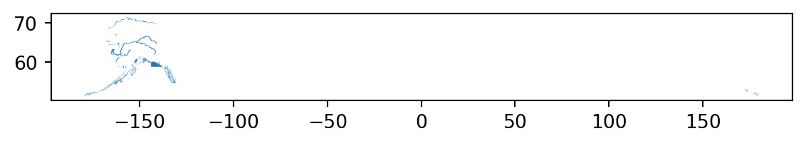
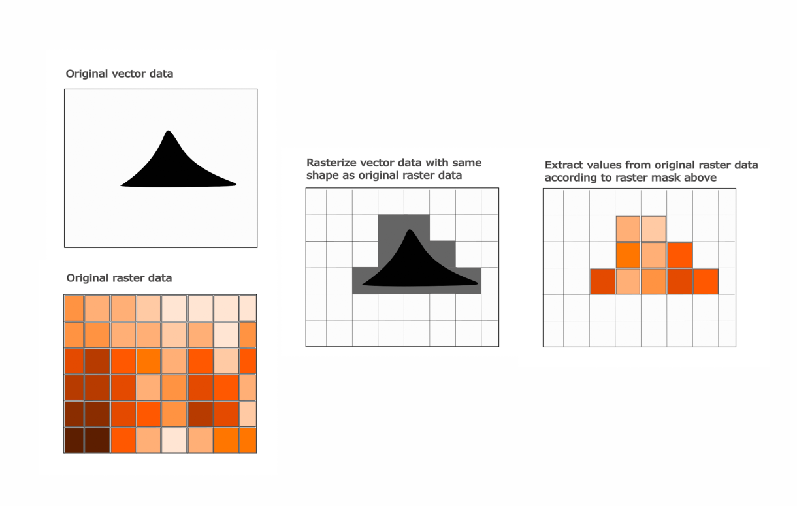

import urllib
url = 'https://arcticdata.io/metacat/d1/mn/v2/object/urn%3Auuid%3A6b847ab0-9a3d-4534-bf28-3a96c5fa8d72'
msg = urllib.request.urlretrieve(url, "Coastal_2020_08.tif")10 Spatial and Image Data Using GeoPandas
10.1 Learning Objectives
- Manipulating raster data with
rasterio - Manipulating vector data with
geopandas - Working with raster and vector data together
10.2 Introduction
In this lesson, we’ll be working with geospatial raster and vector data to do an analysis on vessel traffic in south central Alaska. If you aren’t already familiar, geospatial vector data consists of points, lines, and/or polygons, which represent locations on the Earth. Geospatial vector data can have differing geometries, depending on what it is representing (eg: points for cities, lines for rivers, polygons for states.) Raster data uses a set of regularly gridded cells (or pixels) to represent geographic features.
Both geospatial vector and raster data have a coordinate reference system, which describes how the points in the dataset relate to the 3-dimensional sphereoid of Earth. A coordinate reference system contains both a datum and a projection. The datum is how you georeference your points (in 3 dimensions!) onto a spheroid. The projection is how these points are mathematically transformed to represent the georeferenced point on a flat piece of paper. All coordinate reference systems require a datum. However, some coordinate reference systems are “unprojected” (also called geographic coordinate systems). Coordinates in latitude/longitude use a geographic (unprojected) coordinate system. One of the most commonly used geographic coordinate systems is WGS 1984.
Coordinate reference systems are often referenced using a shorthand 4 digit code called an EPSG code. We’ll be working with two coordinate reference systems in this lesson with the following codes:
- 3338: Alaska Albers
- 4326: WGS84 (World Geodetic System 1984), used in GPS
In this lesson, we are going to take two datasets:
- Alaskan commercial salmon fishing statisical areas
- North Pacific and Arctic Marine Vessel Traffic Dataset
and use them to calculate the total distance travelled by ships within each fishing area.
The high level steps will be
- read in the datasets
- reproject them so they are in the same projection
- extract a subset of the raster and vector data using a bounding box
- turn each polygon in the vector data into a raster mask
- use the masks to calculate the total distance travelled (sum of pixels) for each fishing area
10.3 Pre-processing raster data
First we need to load in our libraries. We’ll use geopandas for vector manipulation, rasterio for raster maniupulation.
First, we’ll use requests to download the ship traffic raster from Kapsar et al.. We grab a one month slice from August, 2020 of a coastal subset of data with 1km resolution. To get the URL in the code chunk below, you can right click the download button for the file of interest and select “copy link address.”
Using rasterio, open the raster file, plot it, and look at the metadata. We use the with here as a context manager. This ensures that the connection to the raster file is closed and cleaned up when we are done with it.
import rasterio
import matplotlib.pyplot as plt
with rasterio.open("Coastal_2020_08.tif") as ship_con:
# read in raster (1st band)
ships = ship_con.read(1)
ships_meta = ship_con.profile
plt.imshow(ships)
print(ships_meta){'driver': 'GTiff', 'dtype': 'float32', 'nodata': -3.3999999521443642e+38, 'width': 3087, 'height': 2308, 'count': 1, 'crs': CRS.from_epsg(3338), 'transform': Affine(999.7994153462766, 0.0, -2550153.29233849,
0.0, -999.9687691991521, 2711703.104608573), 'tiled': False, 'compress': 'lzw', 'interleave': 'band'}You’ll notice that we are saving two objects here, ships and ships_meta. Looking at the types of these two objects is useful to understand what rasterio is doing.
type(ships)numpy.ndarraytype(ships_meta)rasterio.profiles.ProfileThe ships object is a numpy array, while the ships_meta is a special rasterio class called Profile. To understand why the raster data is represented as an array, and what that profile object is, let’s look into what raster data are, exactly.
The upper left panel of the figure above shows some satellite imagery data. These data are in raster format, which when you zoom in, you can see consist of regularly gridded pixels, each of which contails a value. When we plot these data, we can assign a color map to the pixel values, which generates the image we see. The data themselves, though, are just an n-dimensional grid of numbers. Another way we might describe this is…an array! So, this is why raster data is represented in python using a numpy array.
This is all great, and the array of values is a lot of information, but there are some key items that are missing. This array isn’t imaginary, it represents a physical space on this earth, so where is all of that contextual information? The answer is in the rasterio profile object. This object contains all of the metadata needed to interpret the raster array. Here is what our ships_meta contains:
'driver': 'GTiff',
'dtype': 'float32',
'nodata': -3.3999999521443642e+38,
'width': 3087,
'height': 2308,
'count': 1,
'crs': CRS.from_epsg(3338),
'transform': Affine(999.7994153462766, 0.0, -2550153.29233849, 0.0, -999.9687691991521, 2711703.104608573),
'tiled': False,
'compress': 'lzw',
'interleave': 'band'}This object gives us critical information, like the CRS of the data, the no data value, and the transform. The transform is what allows us to move from image pixel (row, column) coordinates to and from geographic/projected (x, y) coordinates. The transform and the CRS are crititally important, and related. If the CRS are instructions for how the coordinates can be represented in space and on a flat surface (in the case of projected coordinate systems), then the transform describes how to locate the raster array positions in the correct coordinates given by the CRS.
Note that since the array and the profile are in separate objects it is easy to lose track of one of them, accidentally overwrite it, etc. Try to adopt a naming convention that works for you because they usually need to work together in geospatial operations.
10.4 Pre-processing vector data
Now download a vector shapefile of commercial fishing districts in Alaska.
url = 'https://knb.ecoinformatics.org/knb/d1/mn/v2/object/urn%3Auuid%3A7c942c45-1539-4d47-b429-205499f0f3e4'
msg = urllib.request.urlretrieve(url, "Alaska_Commercial_Salmon_Boundaries.gpkg")Read in the data using geopandas.
import geopandas as gpd
comm = gpd.read_file("Alaska_Commercial_Salmon_Boundaries.gpkg")Note the “pandas” in the library name “geopandas.” Our comm object is really just a special type of pandas data frame called a geodataframe. This means that in addition to any geospatial stuff we need to do, we can also just do regular pandas things on this data frame.
For example, we can get a list of column names (there are a lot!)
comm.columns.valuesarray(['OBJECTID', 'GEOMETRY_START_DATE', 'GEOMETRY_END_DATE',
'STAT_AREA', 'STAT_AREA_NAME', 'FISHERY_GROUP_CODE',
'GIS_SERIES_NAME', 'GIS_SERIES_CODE', 'REGION_CODE',
'REGISTRATION_AREA_NAME', 'REGISTRATION_AREA_CODE',
'REGISTRATION_AREA_ID', 'REGISTRATION_LOCATION_ABBR',
'MANAGEMENT_AREA_NAME', 'MANAGEMENT_AREA_CODE', 'DISTRICT_NAME',
'DISTRICT_CODE', 'DISTRICT_ID', 'SUBDISTRICT_NAME',
'SUBDISTRICT_CODE', 'SUBDISTRICT_ID', 'SECTION_NAME',
'SECTION_CODE', 'SECTION_ID', 'SUBSECTION_NAME', 'SUBSECTION_CODE',
'SUBSECTION_ID', 'COAR_AREA_CODE', 'CREATOR', 'CREATE_DATE',
'EDITOR', 'EDIT_DATE', 'COMMENTS', 'STAT_AREA_VERSION_ID',
'Shape_Length', 'Shape_Area', 'geometry'], dtype=object)We can also look at the head of the data frame:
comm.head<bound method NDFrame.head of OBJECTID GEOMETRY_START_DATE GEOMETRY_END_DATE STAT_AREA \
0 12 1975-01-01 00:00:00+00:00 NaT 33461
1 13 1975-01-01 00:00:00+00:00 NaT 33462
2 18 1978-01-01 00:00:00+00:00 NaT 33431
3 19 1980-01-01 00:00:00+00:00 NaT 33442
4 20 1980-01-01 00:00:00+00:00 NaT 33443
.. ... ... ... ...
860 959 NaT NaT 19241
861 960 NaT NaT 19242
862 961 1994-01-01 00:00:00+00:00 NaT 19245
863 962 NaT NaT 19250
864 963 1994-01-01 00:00:00+00:00 NaT 18252
STAT_AREA_NAME FISHERY_GROUP_CODE \
0 Tanana River mouth to Kantishna River B
1 Kantishna River to Wood River B
2 Toklik to Cottonwood Point B
3 Right Bank, Bishop Rock to Illinois Creek B
4 Left Bank, Cone Point to Illinois Creek B
.. ... ...
860 Kaliakh River B
861 Tsiu River B
862 Midtimber River B
863 Seal River B
864 Middle Italio B
GIS_SERIES_NAME GIS_SERIES_CODE REGION_CODE REGISTRATION_AREA_NAME \
0 Salmon B 3 Yukon Area
1 Salmon B 3 Yukon Area
2 Salmon B 3 Yukon Area
3 Salmon B 3 Yukon Area
4 Salmon B 3 Yukon Area
.. ... ... ... ...
860 Salmon B 1 Southeastern Alaska Area
861 Salmon B 1 Southeastern Alaska Area
862 Salmon B 1 Southeastern Alaska Area
863 Salmon B 1 Southeastern Alaska Area
864 Salmon B 1 Southeastern Alaska Area
... COAR_AREA_CODE CREATOR CREATE_DATE \
0 ... YU Evelyn Russel 2006-03-26 00:00:00+00:00
1 ... YU Evelyn Russel 2006-03-26 00:00:00+00:00
2 ... YL Evelyn Russel 2006-03-26 00:00:00+00:00
3 ... YU Evelyn Russel 2006-03-26 00:00:00+00:00
4 ... YU Evelyn Russel 2006-03-26 00:00:00+00:00
.. ... ... ... ...
860 ... A2 Evelyn Russel 2006-03-26 00:00:00+00:00
861 ... A2 Evelyn Russel 2006-03-26 00:00:00+00:00
862 ... A2 Evelyn Russel 2006-03-26 00:00:00+00:00
863 ... A2 Evelyn Russel 2006-03-26 00:00:00+00:00
864 ... A2 Sabrina Larsen 2017-05-05 00:00:00+00:00
EDITOR EDIT_DATE \
0 Sabrina Larsen 2017-02-02 00:00:00+00:00
1 Sabrina Larsen 2017-02-02 00:00:00+00:00
2 Sabrina Larsen 2017-02-02 00:00:00+00:00
3 Sabrina Larsen 2017-02-02 00:00:00+00:00
4 Sabrina Larsen 2017-02-02 00:00:00+00:00
.. ... ...
860 Sabrina Larsen NaT
861 Sabrina Larsen NaT
862 Sabrina Larsen NaT
863 Sabrina Larsen NaT
864 None NaT
COMMENTS STAT_AREA_VERSION_ID \
0 Yukon District, 6 Subdistrict and 6-A Section ... None
1 Yukon District, 6 Subdistrict and 6-B Section ... None
2 Yukon District and 3 Subdistrict until 1/1/1980 None
3 None None
4 None None
.. ... ...
860 None None
861 None None
862 None None
863 None None
864 None None
Shape_Length Shape_Area geometry
0 4.610183 0.381977 MULTIPOLYGON (((-151.32805 64.96913, -151.3150...
1 3.682421 0.321943 MULTIPOLYGON (((-149.96255 64.70518, -149.9666...
2 2.215641 0.198740 MULTIPOLYGON (((-161.39853 61.55463, -161.4171...
3 9.179852 0.382788 MULTIPOLYGON (((-153.15234 65.24944, -153.0761...
4 9.500826 0.378262 MULTIPOLYGON (((-152.99905 65.17027, -152.9897...
.. ... ... ...
860 0.223565 0.000408 MULTIPOLYGON (((-142.90787 60.09177, -142.9051...
861 0.030506 0.000006 MULTIPOLYGON (((-143.00416 60.07711, -143.0046...
862 0.019805 0.000012 MULTIPOLYGON (((-143.28504 60.05800, -143.2861...
863 0.096016 0.000238 MULTIPOLYGON (((-143.49701 60.04832, -143.5083...
864 0.016237 0.000006 MULTIPOLYGON (((-139.15063 59.30748, -139.1489...
[865 rows x 37 columns]>Note the existence of the geometry column. This is where the actual geospatial points that comprise the vector data are stored, and this brings up the important difference between raster and vector data - while raster data is regularly gridded at a specific resolution, vector data are just points in space.
The diagram above shows the three different types of geometries that geospatial vector data can take, points, lines or polygons. Whatever the geometry type, the geometry information (the x,y points) is stored in the column named geometry in the geopandas data frame. In this example, we have a dataset containing polygons of fishing districts. Each row in the dataset corresonds to a district, with unique attributes (the other columns in the dataset), and it’s own set of points defining the boundaries of the district, contained in the geometry column.
comm['geometry'][:5]0 MULTIPOLYGON (((-151.32805 64.96913, -151.3150...
1 MULTIPOLYGON (((-149.96255 64.70518, -149.9666...
2 MULTIPOLYGON (((-161.39853 61.55463, -161.4171...
3 MULTIPOLYGON (((-153.15234 65.24944, -153.0761...
4 MULTIPOLYGON (((-152.99905 65.17027, -152.9897...
Name: geometry, dtype: geometrySo, now we know where our x,y points are, where is all of the other information like the crs? With vector data, all of this information is contained within the geodataframe. We can access the crs attribute on the data frame and print it like so:
comm.crs<Geographic 2D CRS: EPSG:4326>
Name: WGS 84
Axis Info [ellipsoidal]:
- Lat[north]: Geodetic latitude (degree)
- Lon[east]: Geodetic longitude (degree)
Area of Use:
- name: World.
- bounds: (-180.0, -90.0, 180.0, 90.0)
Datum: World Geodetic System 1984 ensemble
- Ellipsoid: WGS 84
- Prime Meridian: GreenwichNow that we know a little about what we are working with, let’s get this data ready to analyze. First, we can make a plot of it just to see what we have.
comm.plot()<AxesSubplot:>
This plot doesn’t look so good. Turns out, these data are in WGS 84 (EPSG 4326), as opposed to Alaska Albers (EPSG 3338), which is what our raster data are in. To make pretty plots, and allow our raster data and vector data to be analyzed together, we’ll need to reproject the vector data into 3338. To to this, we’ll use the to_crs method on our comm object, and specify as an argument the projection we want to transform to.
comm_3338 = comm.to_crs("EPSG:3338")
comm_3338.plot()<AxesSubplot:>Much better!
10.5 Crop data to area of interest
For this example, we are only interested in south central Alaska, encompassing Prince William Sound, Cook Inlet, and Kodiak. Our raster data is significantly larger than that, and the vector data is statewide. So, as a first step we might want to crop our data to the area of interest.
First, we’ll need to create a bounding box. We use the box function from shapely to create the bounding box, then create a geoDataFrame from the points, and finally convert the WGS 84 coordinates to the Alaska Albers projection.
from shapely.geometry import box
coord_box = box(-159.5, 55, -144.5, 62)
coord_box_df = gpd.GeoDataFrame(
crs = 'EPSG:4326',
geometry = [coord_box]).to_crs("EPSG:3338")Now, we can read in raster again cropped to bounding box. We use the mask function from rasterio.mask. Note that we apply this to the connection to the raster file (with rasterio.open(...)), then update the metadata associated with the raster, because the mask function requires as its first dataset argument a dataset object opened in r mode.
import rasterio.mask
import numpy as np
with rasterio.open("Coastal_2020_08.tif") as ship_con:
shipc_arr, shipc_transform = rasterio.mask.mask(ship_con,
coord_box_df["geometry"],
crop=True)
shipc_meta = ship_con.meta
# select just the 2-D array (by default a 3-D array is returned even though we only have one band)
shipc_arr = shipc_arr[0,:,:]
# turn the no-data values into NaNs.
shipc_arr[shipc_arr == ship_con.nodata] = np.nanshipc_meta.update({"driver": "GTiff",
"height": shipc_arr.shape[0],
"width": shipc_arr.shape[1],
"transform": shipc_transform,
"compress": "lzw"})Next, we’ll use a spatial inner join for the vector data to select polygons that are within the bounding box.
comm_clip = gpd.sjoin(comm_3338,
coord_box_df,
how='inner',
predicate='within')10.5.1 Check extents
Now let’s look at the two cropped datasets overlayed on each other to ensure that the extents look right.
import rasterio.plot
# set up plot
fig, ax = plt.subplots(figsize=(7, 7))
# plot the raster
rasterio.plot.show(shipc_arr,
ax=ax,
vmin = 0,
vmax = 50000,
transform = shipc_transform)
# plot the vector
comm_clip.plot(ax=ax, facecolor='none', edgecolor='red')<AxesSubplot:>10.6 Calculate total distance per fishing area
In this step, we rasterize each polygon in the shapefile, such that pixels in or touching the polygon get a value of 1, and pixels not touching it get a value of 0. Then, for each polygon, we extract the indices of the raster array that are equal to 1. We then extract the values of these indicies from the original ship traffic raster data, and calculate the sum of the values over all of those pixels.
Here is a simplified diagram of the process:

10.6.0.1 Zonal statistics over one polygon
Let’s look at how this works over just one fishing area first. We use the rasterize method from the features module in rasterio. This takes as arguments the data to rasterize (in this case the 40th row of our dataset), and the shape and transform the output raster will take. We alo set the all_touched argument to true, which means any pixel that touches a boundary of our vector will be burned into the mask.
from rasterio import features
r40 = features.rasterize(comm_clip['geometry'][40].geoms,
out_shape=shipc_arr.shape,
transform=shipc_meta['transform'],
all_touched=True)If we have a look at a plot of our rasterized version of the single fishing district, we can see that instead of a vector, we now have a raster showing the rasterized district (with pixel values of 1) and any area not in the district has a pixel value of 0.
# set up plot
fig, ax = plt.subplots(figsize=(7, 7))
# plot the raster
rasterio.plot.show(r40,
ax=ax,
vmin = 0,
vmax = 1,
transform = shipc_meta['transform'])
# plot the vector
comm_clip.plot(ax=ax, facecolor='none', edgecolor='red')<AxesSubplot:>A quick call to np.unique shows our unique values are 0 or 1, which is what we expect.
np.unique(r40)array([0, 1], dtype=uint8)Finally, we need to know is the indices of the original raster where the fishing district is. We can use np.where to extract this information
r40_index = np.where(r40 == 1)
print(r40_index)(array([108, 108, 108, 108, 108, 109, 109, 109, 109, 109, 109, 109, 109,
109, 109, 110, 110, 110, 110, 110, 110, 110, 110, 110, 110, 110,
110, 110, 110, 111, 111, 111, 111, 111, 111, 111, 111, 111, 111,
111, 111, 111, 111, 112, 112, 112, 112, 112, 112, 112, 112, 112,
112, 112, 112, 112, 112, 112, 113, 113, 113, 113, 113, 113, 113,
113, 113, 113, 113, 113, 113, 113, 113, 114, 114, 114, 114, 114,
114, 114, 114, 114, 114, 114, 115, 115, 115, 115, 115, 115, 116]), array([759, 760, 762, 763, 764, 755, 756, 757, 758, 759, 761, 762, 763,
764, 765, 753, 754, 755, 756, 757, 758, 759, 760, 761, 762, 763,
764, 765, 766, 753, 754, 755, 756, 757, 758, 759, 760, 761, 762,
763, 764, 765, 766, 753, 754, 755, 756, 757, 758, 759, 760, 761,
762, 763, 764, 765, 766, 767, 753, 754, 755, 756, 757, 758, 759,
760, 761, 762, 763, 764, 765, 766, 767, 753, 754, 755, 756, 757,
758, 759, 760, 761, 762, 763, 753, 754, 755, 756, 757, 758, 754]))In the last step, we’ll using these indices to extract the values of the data from the fishing raster, and sum them to get a total distance travelled.
np.nansum(shipc_arr[r40_index])14369028.0Now that we know the individual steps, let’s run this over all of the districts. First we’ll create an id column in the vector data frame. This will help us track unique fishing districts later.
10.6.0.2 Zonal statistics over all polygons
comm_clip['id'] = range(0,len(comm_clip))For each district (with geometry and id), we run the features.rasterize function. Then we calculate the sum of the values of the shipping raster r_array based on the indicies in the raster where the district is located.
distance_dict = {}
for geom, idx in zip(comm_clip['geometry'], comm_clip['id']):
rasterized = features.rasterize(geom.geoms,
out_shape=shipc_arr.shape,
transform=shipc_meta['transform'],
all_touched=True)
r_index = np.where(rasterized == 1)
distance_dict[idx] = np.nansum(shipc_arr[r_index])Now we just create a data frame from that dictionary, and join it to the vector data using pandas operations.
import pandas as pd
# create a data frame from the result
distance_df = pd.DataFrame.from_dict(distance_dict,
orient='index',
columns=['distance'])
# extract the index of the data frame as a column to use in a join and convert distance to kilometers
distance_df['id'] = distance_df.index
distance_df['distance'] = distance_df['distance']/1000Now we join the result to the original geodataframe.
# join the sums to the original data frame
res_full = comm_clip.merge(distance_df,
on = "id",
how = 'inner')Finally, we can plot our result!
import matplotlib.ticker
fig, ax = plt.subplots(figsize=(7, 7))
ax = res_full.plot(column = "distance", legend = True, ax = ax)
fig = ax.figure
label_format = '{:,.0f}'
cb_ax = fig.axes[1]
ticks_loc = cb_ax.get_yticks().tolist()
cb_ax.yaxis.set_major_locator(matplotlib.ticker.FixedLocator(ticks_loc))
cb_ax.set_yticklabels([label_format.format(x) for x in ticks_loc])
ax.set_axis_off()
ax.set_title("Distance Traveled by Ships in Kilometers")
plt.show()From here we can do any additional geopandas operations we might be interested in. For example, what if we want to calculate the total distance by registration area (a superset of fishing district). We can do that using dissolve from geopandas.
reg_area = res_full.dissolve(by = "REGISTRATION_AREA_NAME",
aggfunc = 'sum')Let’s have a look at the same plot as before, but this time over our aggregated data.
fig, ax = plt.subplots(figsize=(7, 7))
ax = reg_area.plot(column = "distance", legend = True, ax = ax)
fig = ax.figure
label_format = '{:,.0f}'
cb_ax = fig.axes[1]
ticks_loc = cb_ax.get_yticks().tolist()
cb_ax.yaxis.set_major_locator(matplotlib.ticker.FixedLocator(ticks_loc))
cb_ax.set_yticklabels([label_format.format(x) for x in ticks_loc])
ax.set_axis_off()
ax.set_title("Distance Traveled by Ships in Kilometers")
plt.show()10.7 Summary
We covered a lot of ground here, so let’s recap some of the high level points:
- Raster data consist of regularly gridded values, and can be represented in python as an array
- Vector data consist of any number of points, that might be connected, and is represented in python as a geodataframe
- We can do geospatial operations like changing the projection or cropping the data to a particular extent on both raster and vector data
- You can use vector data to help analyze raster data (and vice versa!) by rasterizing the vector data and using numpy operations on the resulting array.